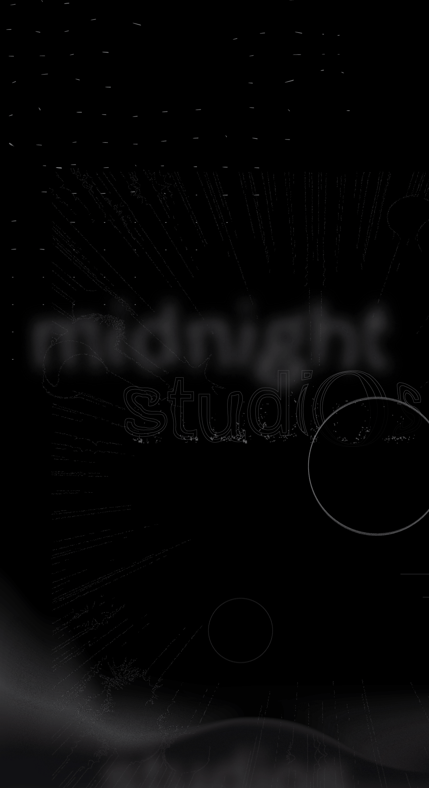
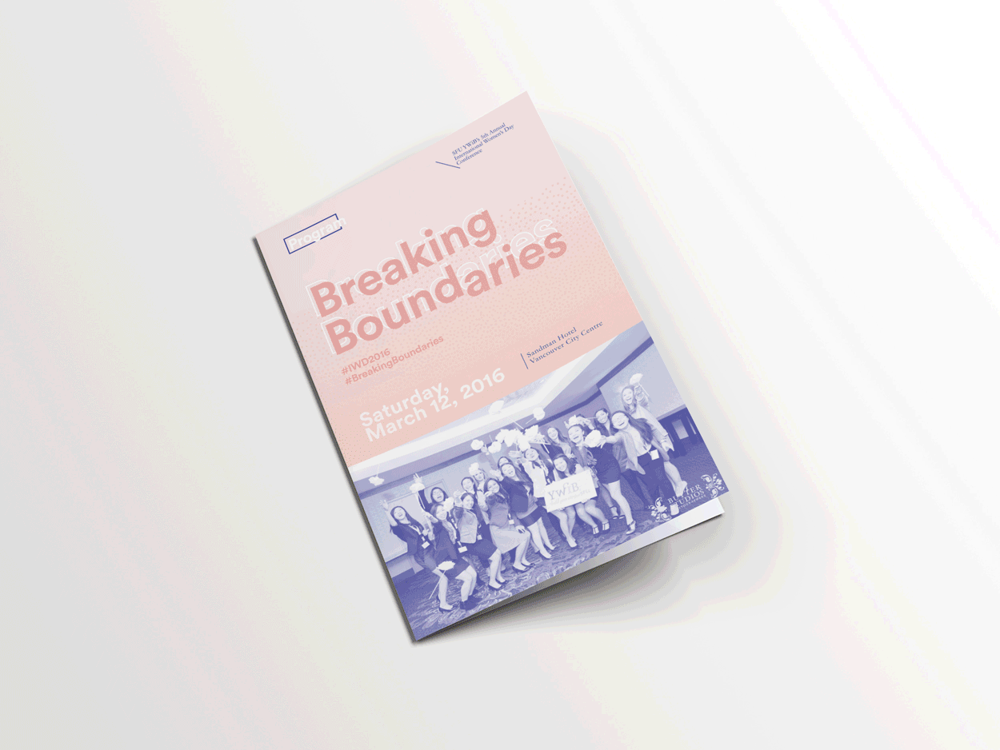
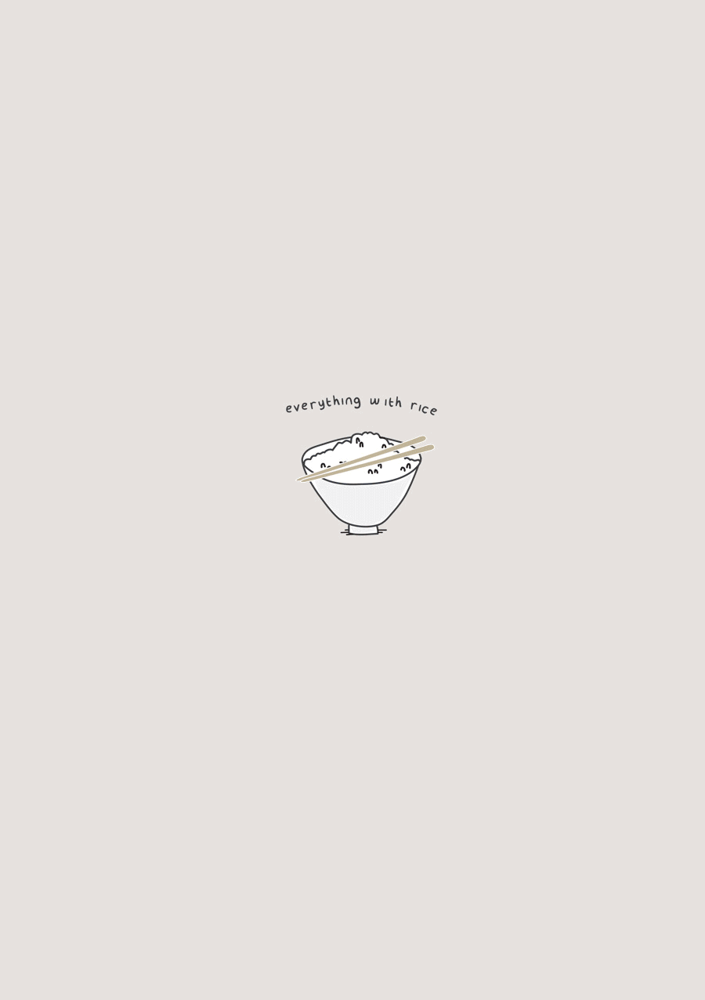

Kae Linh
About
Visual Journal
A slosh of other things I've made.
Typographic exploration project for Midnight Studios. (2018)

Event and program design for
YWiB’s 6th Annual International Women’s Day Conference
. (2016)

Documenting Home Recipes, in collaboration with my one and only Ma. Given as Christmas gifts to the fam. (2015)

Previous
UNHCR
8
Next
Twitch: Always on Player
1